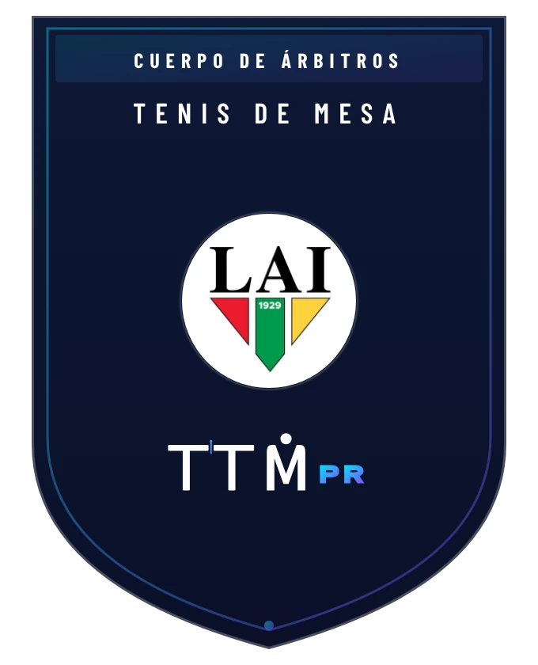

Posiciones · Temporada regular
- 1UAGM7-0
- 2Interamericana6-1
- 3UPR Arecibo5-2
- 4UPR Mayagüez4-3
- 5UPR Río Piedras3-4
- 6Politécnica2-5
Coordinación y dirección técnica del tenis de mesa en el contexto de la Liga Atlética Interuniversitaria: desde calendarios y rosters hasta mesa técnica, árbitros y estadísticas en vivo.
Una muestra de la planificación técnica de la temporada.
Programa de tenis de mesa de la Liga Atlética Interuniversitaria: ocho universidades, ramas masculina y femenina. Datos de StadiumTT al 17 de octubre de 2026.
Cada fase con su fecha, su sede y sus resultados. El estado se actualiza con cada jornada.
Sábado, 31 de octubre de 2026 · Sede: TBD.
Postemporada y temporada regular, con cada partido individual. Datos certificados en StadiumTT al 17 de octubre de 2026.
J = encuentro de la serie (al mejor de tres). La columna Serie indica victorias por serie.
Leer crónica: cuartos de finalFormato Swaythling Cup: hasta cinco partidos individuales por encuentro, cada uno al mejor de cinco sets. Fuente: StadiumTT, evento «Tenis de Mesa - LAI 2026/27».
Partidos certificados en StadiumTT: temporada regular y postemporada hasta el 17 de octubre de 2026.
Victoria = 2 pts · Derrota = 1 pt. Desempate: diferencia de partidos y luego de sets.
| # | Universidad | G-P | Pts | Partidos | Sets |
|---|---|---|---|---|---|
| 1 | UAGM | 7-0 | 14 | 21-4 | 66-18 |
| 2 | Interamericana | 6-1 | 13 | 20-4 | 67-18 |
| 3 | UPR Arecibo | 5-2 | 12 | 16-8 | 53-34 |
| 4 | UPR Mayagüez | 4-3 | 11 | 13-9 | 42-32 |
| 5 | UPR Río Piedras | 3-4 | 10 | 12-13 | 42-45 |
| 6 | Politécnica | 2-5 | 9 | 7-17 | 28-53 |
| 7 | Católica | 1-6 | 8 | 5-18 | 19-55 |
| 8 | UPR Cayey | 0-7 | 7 | 0-21 | 1-63 |
| # | Universidad | G-P | Pts | Partidos | Sets |
|---|---|---|---|---|---|
| 1 | UAGM | 5-0 | 10 | 15-1 | 47-6 |
| 2 | Interamericana | 4-1 | 9 | 13-3 | 40-13 |
| 3 | UPR Río Piedras | 3-2 | 8 | 9-8 | 30-32 |
| 4 | UPR Arecibo | 2-3 | 7 | 8-9 | 28-31 |
| 5 | UPR Mayagüez | 1-4 | 6 | 3-12 | 17-36 |
| 6 | UPR Cayey | 0-5 | 5 | 0-15 | 1-45 |
Todas las rondas. Porcentajes con un mínimo de 5 partidos.
Todas las rondas. Toca un encabezado para ordenar la tabla.
| 1 | Eduardo Darley Mejía | UPR Arecibo | M | 22 | 10-2 | 83.3% | 31-12 | 72.1% |
| 2 | Brian A. Mena Sigler | Interamericana | M | 20 | 9-2 | 81.8% | 30-10 | 75% |
| 3 | Oscar A. Birriel Rivera | Interamericana | M | 19 | 9-1 | 90% | 29-5 | 85.3% |
| 4 | Jerall Montijo Rivera | Interamericana | M | 17 | 8-1 | 88.9% | 26-5 | 83.9% |
| 5 | Ramón C. Vila Mena | UAGM | M | 16 | 8-0 | 100% | 24-4 | 85.7% |
| 6 | Jabdiel J. Torres Rivera | UAGM | M | 16 | 7-2 | 77.8% | 21-7 | 75% |
| 7 | Yamil Castellano Díaz | UPR Arecibo | M | 16 | 7-2 | 77.8% | 22-8 | 73.3% |
| 8 | Sebastian Cruz Ruiz | UPR Río Piedras | M | 16 | 6-4 | 60% | 20-15 | 57.1% |
| 9 | Eliam Dávila Santiago | UPR Mayagüez | M | 16 | 6-4 | 60% | 21-16 | 56.8% |
| 10 | Andrew Y. Rivera González | UPR Mayagüez | M | 15 | 6-3 | 66.7% | 18-13 | 58.1% |
| 11 | Eduardo Sánchez Cardona | UPR Río Piedras | M | 15 | 4-7 | 36.4% | 18-24 | 42.9% |
| 12 | Abel López Carbó | Politécnica | M | 15 | 3-9 | 25% | 12-29 | 29.3% |
| 13 | Giovanni F. Centeno Flores | UPR Mayagüez | M | 14 | 4-6 | 40% | 14-22 | 38.9% |
| 14 | Yadier A. López Vélez | UAGM | M | 13 | 6-1 | 85.7% | 19-3 | 86.4% |
| 15 | José M. Nieves Burgos | UAGM | M | 13 | 6-1 | 85.7% | 20-4 | 83.3% |
| 16 | Danelys Cruz Rosario | UPR Arecibo | F | 13 | 5-3 | 62.5% | 18-11 | 62.1% |
| 17 | Ayram Santiago Godreau | Católica | M | 13 | 3-7 | 30% | 12-22 | 35.3% |
| 18 | Kailyn Cruz Rosado | UPR Río Piedras | F | 12 | 5-2 | 71.4% | 16-9 | 64% |
| 19 | Christian Marrero Negrón | Politécnica | M | 12 | 2-8 | 20% | 7-24 | 22.6% |
| 20 | Alahia Medina García | Interamericana | F | 10 | 4-2 | 66.7% | 12-7 | 63.2% |
| 21 | José Méndez Vargas | UPR Río Piedras | M | 10 | 2-6 | 25% | 10-18 | 35.7% |
| 22 | Idalys Y. Torres Cintrón | UPR Mayagüez | F | 10 | 2-6 | 25% | 9-20 | 31% |
| 23 | Johan L. Rosario Ocasio | Católica | M | 10 | 1-8 | 11.1% | 6-24 | 20% |
| 24 | Emely J. Alvarado Santiago | Interamericana | F | 9 | 4-1 | 80% | 13-4 | 76.5% |
| 25 | Yahira Rivera Arocho | UPR Río Piedras | F | 9 | 3-3 | 50% | 11-10 | 52.4% |
| 26 | Edmarie Z. León Burgos | UAGM | F | 8 | 4-0 | 100% | 12-0 | 100% |
| 27 | Kristal A. Meléndez Lafontaine | Interamericana | F | 8 | 4-0 | 100% | 12-2 | 85.7% |
| 28 | Gabriela Vargas Acevedo | UPR Arecibo | F | 8 | 3-2 | 60% | 9-8 | 52.9% |
| 29 | Yoarilis Figueroa Rivera | UPR Río Piedras | F | 8 | 3-2 | 60% | 9-9 | 50% |
| 30 | Dylan Ruperto Colón | UPR Arecibo | M | 8 | 2-4 | 33.3% | 9-12 | 42.9% |
| 31 | Nathalya M. Betancourt Díaz | UPR Mayagüez | F | 8 | 1-6 | 14.3% | 7-18 | 28% |
| 32 | Nahiely A. Malaret Cedeño | UPR Mayagüez | F | 8 | 1-6 | 14.3% | 6-18 | 25% |
| 33 | Yamcarys Delacruz Vargas | UPR Río Piedras | F | 7 | 3-1 | 75% | 9-3 | 75% |
| 34 | Sergio Silva Vélez | UPR Río Piedras | M | 7 | 3-1 | 75% | 10-4 | 71.4% |
| 35 | Rodrigo Marrero Marrero | UPR Arecibo | M | 7 | 3-1 | 75% | 11-5 | 68.8% |
| 36 | Adriana Vargas Acevedo | UPR Arecibo | F | 7 | 3-1 | 75% | 9-5 | 64.3% |
| 37 | Liara Rivera Rodriguez | UPR Arecibo | F | 7 | 2-3 | 40% | 9-9 | 50% |
| 38 | Pedro Díaz Rivera | Politécnica | M | 7 | 2-3 | 40% | 8-11 | 42.1% |
| 39 | Ángel G. Cintrón Rodríguez | Católica | M | 7 | 1-5 | 16.7% | 3-15 | 16.7% |
| 40 | Amanda S. Trinidad Pedraza | UPR Cayey | F | 7 | 0-7 | 0% | 1-21 | 4.5% |
| 41 | Camila S. Ruiz Gierbolini | UPR Cayey | F | 7 | 0-7 | 0% | 0-21 | 0% |
| 42 | Ian M. Rivera Cordero | UPR Cayey | M | 7 | 0-7 | 0% | 0-21 | 0% |
| 43 | James E. Lopez Correa | UPR Cayey | M | 7 | 0-7 | 0% | 0-21 | 0% |
| 44 | Ricardo J. Martinez Rodriguez | UPR Cayey | M | 7 | 0-7 | 0% | 0-21 | 0% |
| 45 | Valeria N. Rivera Ortiz | UPR Cayey | F | 7 | 0-7 | 0% | 0-21 | 0% |
| 46 | Alondra S. Rodríguez Ortiz | UAGM | F | 6 | 3-0 | 100% | 9-0 | 100% |
| 47 | Sebastián E. Maldonado Vélez | UPR Mayagüez | M | 6 | 3-0 | 100% | 9-0 | 100% |
| 48 | Alanis del C. Reyes Torres | UAGM | F | 6 | 3-0 | 100% | 9-1 | 90% |
| 49 | Gabriella S. Vázquez Hernández | UAGM | F | 6 | 3-0 | 100% | 9-2 | 81.8% |
| 50 | Denyel J. Reyes Torres | UPR Cayey | M | 6 | 0-6 | 0% | 1-18 | 5.3% |
| 51 | Brianna M. Burgos Rodríguez | UAGM | F | 5 | 2-1 | 66.7% | 8-3 | 72.7% |
| 52 | Francisco Mejías Puente | Politécnica | M | 5 | 1-3 | 25% | 4-9 | 30.8% |
| 53 | Sebastián Rodríguez Rubero | Católica | M | 4 | 0-4 | 0% | 0-12 | 0% |
| 54 | Carla Nazario Colón | UPR Arecibo | F | 3 | 1-1 | 50% | 3-3 | 50% |
| 55 | Sebastian Cuadro Vázquez | UPR Río Piedras | M | 3 | 1-1 | 50% | 3-4 | 42.9% |
| 56 | Yamilia Fontán Cruz | Interamericana | F | 2 | 1-0 | 100% | 3-0 | 100% |
| 57 | Reinalisa Terrón Vicens | UPR Río Piedras | F | 2 | 1-0 | 100% | 3-1 | 75% |
Fuente: StadiumTT, evento «Tenis de Mesa - LAI 2026/27». Instantánea al 17 de octubre de 2026.
Las universidades participantes de la temporada 2026–2027 forman parte de una misma historia competitiva. Sus identidades acompañan los calendarios, los cruces y los resultados.
El trabajo operativo integra planificación, coordinación en cancha y circulación de información durante la temporada.
Diseño y coordinación de fechas, encuentros y fases del torneo.
Organización de la información de participantes y alineaciones.
Preparación y coordinación de la mesa técnica durante los encuentros.
Coordinación del personal arbitral y las necesidades de cada jornada.
Seguimiento y publicación de la información competitiva durante los encuentros.
Organización de resultados, cuadros, posiciones e historial de competencia.
Calendarios, formatos y organización.
Equipos, rosters y recursos técnicos.
Coordinación en cancha, mesa técnica y árbitros.
Estadísticas, resultados y cierre de temporada.
La planificación de la postemporada 2026–2027 contempla una mesa fija por serie, horarios coordinados y una transición específica para la jornada de finales.
Los documentos de trabajo establecen seis mesas simultáneas en cuartos, cuatro en semifinales y una configuración final centrada en las mesas 2 y 3. Los terceros lugares se disputan al inicio de la jornada decisiva.
El tenis de mesa de la LAI cuenta con un Cuerpo de Árbitros propio, coordinado por la dirección técnica, con un manual de arbitraje común y una identidad visual creada para la liga.

Crónicas originales publicadas en FPTM.pr y firmadas por Joel Vega, Director Técnico. La cobertura se suma a la organización y documentación de la competencia.
Dos victorias 3-2 de UPR Mayagüez marcaron los cuartos de final masculinos.
Balance de la temporada regular, sus protagonistas y los cruces de postemporada.
Cobertura de la jornada inaugural y sus resultados más destacados.
Conoce otra parte del ecosistema que impulsa TTMPR.